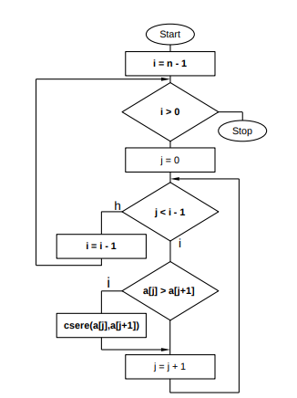

A buborékrendezés (angolul: Bubble sort) egy naiv algoritmus, amellyel egy véges (nem feltétlenül numerikus) sorozat – vagy számítástechnikai szóhasználattal élve egy tömb – elemei sorba rendezhetők [(n-1)n]/2 összehasonlítás elvégzésével, ahol n a sorozat elemeinek számát jelenti.
Az algoritmus alkalmazásának feltétele hogy a sorozat elemeihez létezzen egy rendezési reláció.
A tömböt az elejétől vizsgálva az egymás után következő elemeket hasonlítja össze. Ha olyat talál, hogy a második elem kisebb, mint az első, megcseréli a két elemet. Így a nagy elemek mint egy 'buborék' haladnak a tömb vége felé, a helyükre. Ha eléri a tömb végét, újra indul elölről. A rendezés akkor fejeződik be, ha az újraindulás után már nem történt egyetlen csere sem.
A buborékrendezés egy egyszerű algoritmus, amelyet főleg az oktatásban használunk, mivel nem igazán hatékony. Elve, hogy egy „buborékkal” haladva a tömbben több menetben elölről hátra a buborékban szereplő két elemet felcseréljük, ha azok rossz sorrendben vannak.
